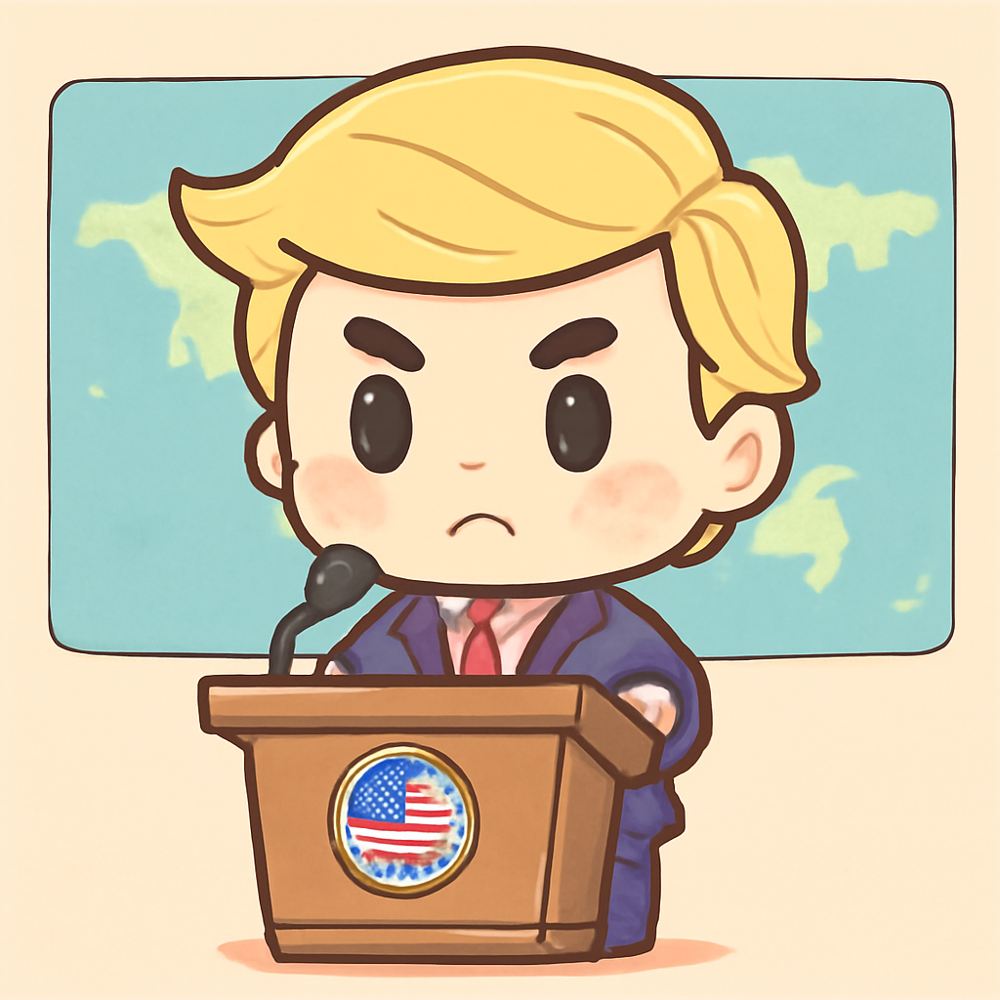

其一 · 美國華府 · 特朗普不撤霍爾木茲封鎖
美國總統特朗普表示不會撤除對伊朗的封鎖，直至達成協議。

在美國華府，特朗普表示，除非與伊朗達成協議，否則將持續對霍爾木茲海峽實施封鎖。這一言論在即將召開的和平會議前引發關注，讓國際局勢更添緊張。看來，特朗普的“好談”還是有些距離。
2026-04-21 · 以古觀今，以笑抗愁
美國總統特朗普表示不會撤除對伊朗的封鎖，直至達成協議。

在美國華府，特朗普表示，除非與伊朗達成協議，否則將持續對霍爾木茲海峽實施封鎖。這一言論在即將召開的和平會議前引發關注，讓國際局勢更添緊張。看來，特朗普的“好談”還是有些距離。
日本政府決定放寬武器出口限制，轉變過去的和平主義。
在東京，日本政府宣布將放寬武器出口規則，這意味著未來將對多個國家銷售武器。這一舉措標誌著日本自二戰以來首次突破和平主義，可能會改變東亞的軍事格局。看來，日本準備在國際舞台上更積極一點了。
南非警方首長因健康合約問題被控，局勢引發廣泛關注。
在約翰尼斯堡，南非警方首長Fannie Masemola因未能妥善監督一項爭議健康合約而被控。這一事件揭示了南非政府在公共衛生管理上的問題，可能會影響未來的公共政策。看來，這位首長得忙著解釋自己的“健康”狀況了。
新西蘭首都惠靈頓因暴雨引發緊急狀態，學校受影響。
惠靈頓最近遭遇暴雨，導致多處山崩和淹水，超過100所學校被迫關閉，當地居民生活受到嚴重影響。這次自然災害提醒我們，母自然的“脾氣”可不是開玩笑的。希望大家都能保持乾爽！
阿根廷新總統米萊致力於改變國家經濟與價值觀。
阿根廷的新任右派總統米萊成功控制了失控的通脹，現在他希望通過推動新的經濟和社會價值觀來重塑國家。這場變革可能影響整個南美洲的政治經濟局勢，未來發展值得關注。看來，米萊總統不只是改變數字，還想改變思維。